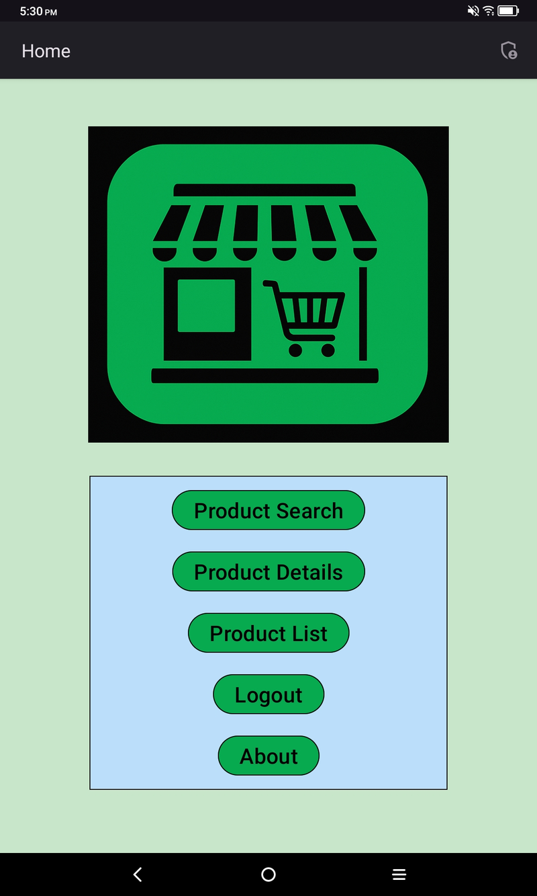
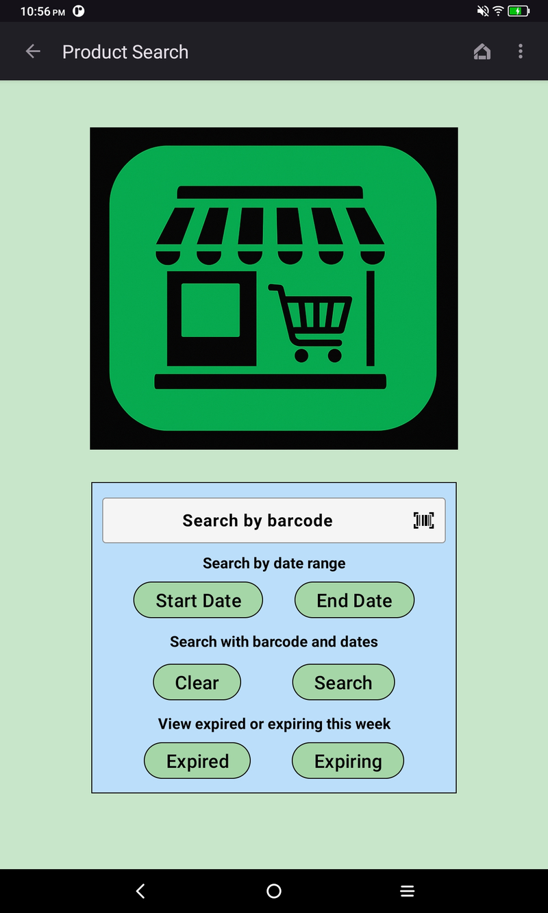
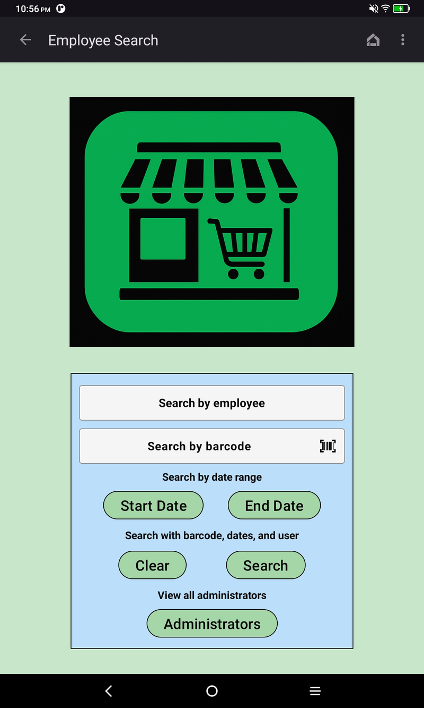
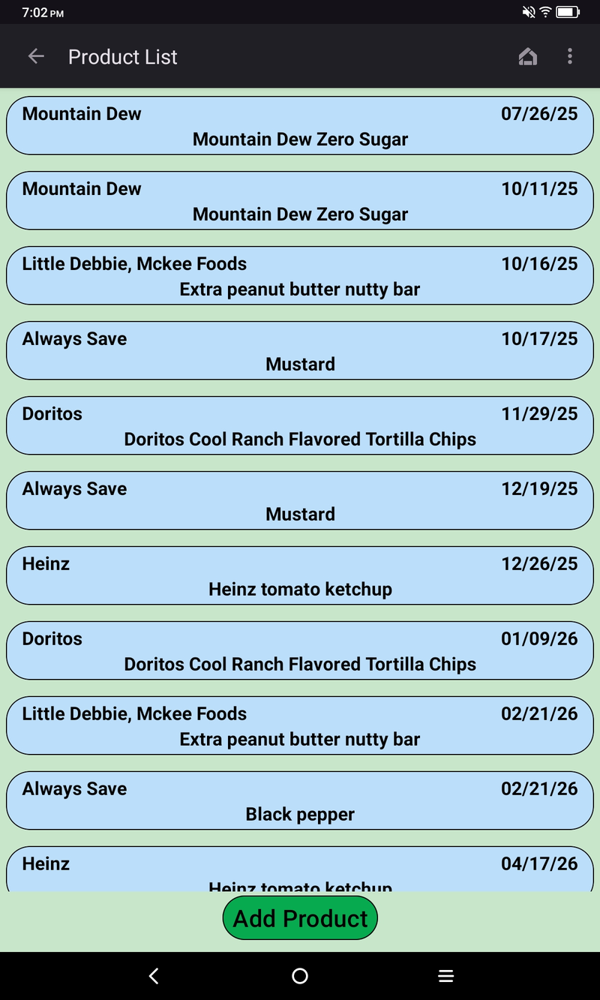
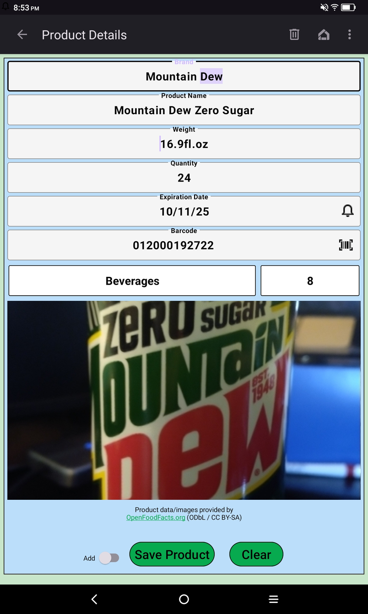
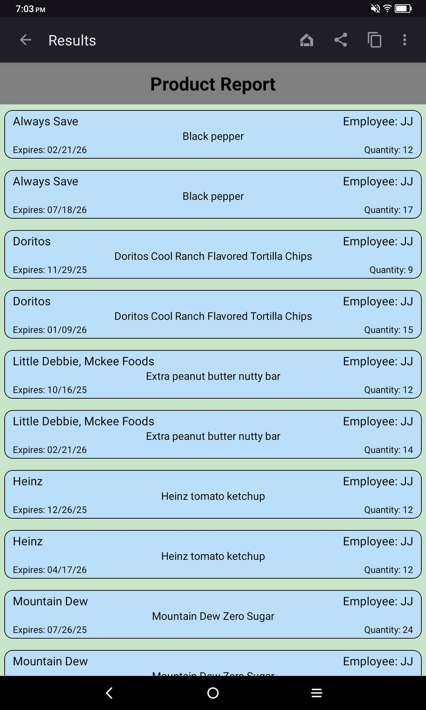

Best By Manager
Keep food safe and shelves stocked with Best By Manager
🧊 Kiosk-style expiration tracking for small businesses.
What Can Best By Manager Do?
- Kiosk workflow — employees select themselves and enter a PIN; all actions are tracked under their account
- Scan barcodes to identify items fast (Open Food Facts lookup)
- Add products with brand, weight, category, quantity, and expiration date
- Early warning reminders — tap the bell icon on the expiration field to enable a 7-day pre-expiry alert
- Expiration alarms fire on the expiration date and clear automatically when quantity hits 0
- Discard tracking (quantity + optional reason) with reporting totals
- Reports filtered by barcode, date range, expiration status, or employee
- Camera photos stored locally — replace a product photo at any time from the overflow menu
- Local-only storage — no cloud accounts, no cloud sync, no analytics
- Admin tools — password reset, PIN reset, employee management, ownership transfer, and a last-resort data wipe
- Offline mode — disable barcode lookup for environments without reliable internet
- Dark / light theme — owner-controlled toggle
How It Works
- Install the app and create the first account → becomes the Owner automatically
- Add employees from the Administrator Dashboard → Employee Details
- Employees select their name on the kiosk screen and set a PIN on first use
- Add inventory via Product Details or by scanning a barcode
- Enable early warning by tapping the bell icon on the expiration field
- Record discards for expired or damaged items from the overflow menu
- Run reports and share summaries via the Android share sheet
- Device auto-locks after inactivity and returns to the employee selection screen
App Preview






Download
Requires Android 8.1 or higher.
The first account created becomes the Owner, with full control over employee management, app settings, and reports.
Learn more: Repository